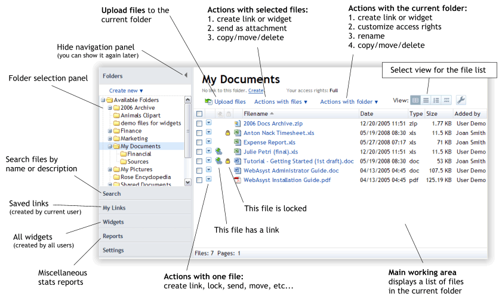
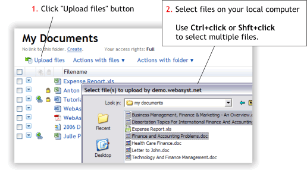
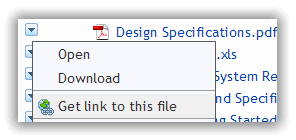
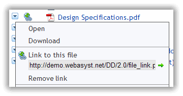
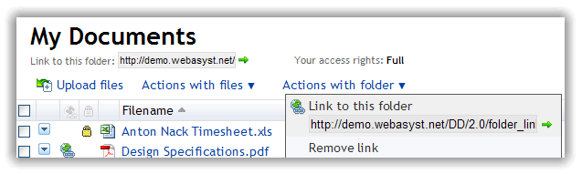
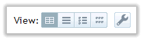

WebAsyst Files at a glanceHere is your WebAsyst Files main window:  |
Uploading files Our bulk uploader allows you to easily add hundred of files to your online folder with just a couple of clicks. After you start to upload, you can continue to work with other files in this folder, tracking the upload process on the progress bar which will appear on top of your file list. You can also cancel uploading at any time.
The total number of files that can be uploaded to WebAsyst Files is limited by your WebAsyst Files account plan and user quota set by a user with administrative privileges. To check your storage space, click Reports -> Storage space usage and quotas from WebAsyst Files navigation panel. |
Creating and sharing file linksWebAsyst Files allows you to create a webpage quickly with a single file, a list of selected files, or an entire folder. You can then share link to this page with your friends and colleagues or publish it in your blog or website. |
Creating link to a single fileClick blue menu icon to open local menu of actions with a single file:  Select "Get link to this file" option. Link address (URL) will immediately appear directly in the menu pane:  Click green arrow icon to open this link in a new window. Copy and paste this link address into your Email or instant messaging program to send it to your friends. |
Creating link to entire folderClick "Actions with folder" menu and select "Get link to this folder" option. Link address (URL) will immediately appear directly in the menu pane and under the folder title:  Click green arrow icon to open this link in a new window. Copy and paste this link address into your Email or instant messaging program to send it to your friends. |
Creating link to selected filesSelect files that you want to be accessed via a single web link.
Click "Actions with files" and choose "Create a link to selected files" option. New link will be created and listed in “My Links” section. Your link address can be copied and sent to other people using your favorite instant messaging program. You can also email the link directly from "My Links" section. Click Email this Link button and in Send Email form select recipients, add optional subject and message, and click Send button. Use “View” menu to select file list appearance:
By default every new link address ends with a meaningless sequence of characters; e.g., a9fm7pXo. Click on Change Address to give a friendly look to your link, a meaningful word in place of the default link address ending (e.g., "animals" in the following sample: http://demo./files/animals).
To rename a link, click on its title, type in the new name, and click on Save. |
Sending files as an email attachmentsClick file menu icon and select Send as attachment option. Or select multiple files and click Actions with files -> Send as attachment. Then select recipients and enter optional subject and message. Click Send button.
|
Giving other users access to your filesYou can work with your files in collaboration with other users. For every folder in your WebAsyst Files repository you can customize following access rights for certain users or user groups:
To customize access rights, select a folder and click Actions with folder -> Customize access rights. You can customize access rights individually for every user on the Users tab, or you can use Groups tab to give access to user groups (you must have access to Users section to create and handle user groups). When setting access level to a folder, the combination of personal and group access rights will be applied as shown in the sample table below:
|
Online editingYou can edit files of certain types directly from your WebAsyst Files account using Zoho online services. Following types of files can be edited:
How it works Click menu for the file you want to edit and select Edit online option. Selected file will be transferred to the Zoho server and opened in the online editor window related to the file type. Once you complete making changes, click Save button in Zoho editor and updated file will be sent back to your WebAsyst Files account.
|
Working with folders and filesFiles are organized in folders and subfolders. Click "Available Folders" in the Folders pane to display a list of all accessible folders. For every folder you can see your access rights and number of files contained in this folder. Click a folder name to navigate to this folder. Depending on your access rights you can upload new files, copy/move/delete files, or create new subfolders, copy/move/delete this folder, or customize access rights for other users to this folder and its subfolders. Most common operations with folders and files are outlined below. |
Adding new folderClick Create new in the Folders panel and select either you want to create new root folder, or a subfolder in your current folder.
|
Copying/Moving foldersNavigate to the folder you want to copy or move and click Actions with folder -> Copy (or Move) option.
|
Copying/Moving filesClick file menu and select Copy or Move command. Or select multiple files and click Actions with files -> Copy (or Move). Then select destination folder.
|
Changing file descriptionTo add file description, click file menu and select <add description> command. Edit box will appear right in the menu pane. Enter a text and click Save button. To change existing description, click file menu and then click anywhere in description area to trigger to edit mode. If you have selected a file list with file description visible (List or Thumbnail List), then simply click in the area of file description to switch to edit mode. Make changes and click Save button below. |
Lock/Unlock filesIf user A and user B are both working with the same document, they can use file locking mechanism to avoid collision. User B will not be able to delete or overwrite a file locked by user A. Locked files are indicated by a small “lock” icon in the file list:
To lock a file, click file menu and select "Lock" command. To unlock a file, click "lock" icon for a previously locked file and select "Unlock" option.
|

Compressing/Extracting ZIP files
Once ZIP archive is created you can download it to your local computer like any other file. To extract files from a previously uploaded ZIP file, navigate to this file and select Extract from ZIP command in the file local menu. All files and subfolders included in ZIP file will be extracted in the current folder.
|
Deleting files and foldersClick Delete command in the file local menu, or select multiple files and click Actions with files -> Delete. To delete an entire folder, navigate to this folder and click Actions with folder -> Delete. Files and folders you delete are not being deleted physically. In fact, they are "marked as deleted" and can be restored. Recycle Bin is a specially designated folder that stores all deleted files. Files and folders in Recycle Bin can be restored back to any available folder. Select files and/or folders you want to restore and click Restore button. You can then indicate destination folder where you wish to restore you files. To remove your files permanently from the Recycle Bin, select files and click Delete.
|
Version historyWebAsyst keeps all previous versions of files. Latest edition is always shown in the main file list view. Old versions of file can be accessed easily via local file menu. File history window displays all previous versions of file and information on file size, date and user who added that version. Every version can be opened or downloaded. You can also select old versions you don't need anymore and delete them. |
Customizing file list viewYour file list can appear in several ways. Depending on the type of files you can set the most convenient format (separately for each folder) from the View toolbar: 
Click rightmost button in the View toolbar to customize following options:
Custom options can be applied to the current folder or to all folders. |
Using widgetsWidget – a piece of content or a tool that you can embed within a page on your website or blog. Generally, widgets allow you to post data from an external web page to your WebAsyst account or publish your WebAsyst content on an external web page. With WebAsyst Files you can create two types of widgets: File List: Displays a listing of selected files or entire folder in customizable format with optional Download button. A great way to publish a file repository on your website. Online Folder: An easy to use tool that allows you to upload files to your web-based storage and access them from anywhere. Online Folder widget is "self-sufficient"; this means you can add, delete, and access your files through this widget without using your main WebAsyst Files account. |
Creating new widgetFile List widget can be created for selected files or entire folder. If you want your File List widget to display only certain files, select them and then click "Actions with files" -> "Create a widget" command. Online Folder widget can be created only for entire folder. Click "Actions with folder" -> "Create a widget" command. |
Customizing widgetYou can change settings of your widget for the best fit with the website where you wish to embed it. For instance, for File List widget you can select Grid or List format, visible columns (e.g. Size, Date, Description), icon size (Small, Large, or Thumbnail), border, etc. To customize widget, go to the "Widgets" section in the navigation panel. Select a widget and click Customize button. Make changes and click Save button, all you changes will be immediately applied and shown in Preview area. |
Embedding widgetThere are two ways to embed your widget within a page on your website or blog:
To get HTML code or link address, go to the "Widgets" section in the navigation panel, select a widget and click Embed button. |